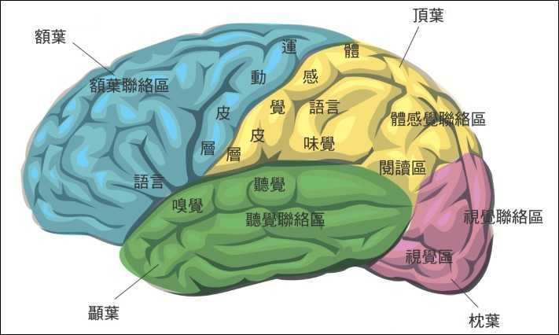

雜 附(6)
六識的依處
四阿含與四部
在北傳四與南傳四部中，都有「眼識、耳識、鼻識、舌識、身識、意識」等六識的分類，這是將「識」依不同所緣展現不同功能所作的分類，就如《中阿含201經》的譬喻：「猶若如火，隨所緣生，即彼緣，說緣木生火，說木火也；緣草糞聚火，說草糞聚火。」（《中部38經》亦同）而這六識，《雜阿含218經》說：「緣眼、色，生眼識，……耳、鼻、舌、身、意亦復如是。」《相應部12相應43經》說：「緣於眼與色而生起眼識」，「緣於意與法而生起意識」[1]。也就是說，當眼識等生起時，在身體上的依處分別是「眼、……意」。而這裡的「眼、……意」，也被歸在「處（āyatana，基地）」、「根（indriya，能力）」、「界（dhātu，性質）」[2] 的分類中，表示它們都有這些性質，也就是說，當眼識生起時，其依處是「眼處；眼根；眼界」（餘五識類推），如《中阿含30經》說，眼處不壞者，眼識得生[3]，《雜阿含452經》說：「緣眼界生眼觸」（解讀為「緣眼界、色界，生眼識，三事和合眼觸」之略）。至於眼根等「根」的用法，在四阿含與四部中則多用在涉及教導律儀、調伏、調御、守護、攝斂、清淨的場合，這與後來常見眼根用在說明眼識生起上不同。
除了《雜阿含322經》描述「眼處」等前五處為「淨色」，「意處」為「非色」[4]外，在四阿含與四部中看不到對這六處有更進一步描述，甚至在南傳五部（含《小部》）中，都未見「淨色」（pasādarūpa）一詞，所以，《雜阿含322經》也有後編入的可能。
另外，《中阿含211經》說：「眼根，耳、鼻、舌、身根，此五根異行、異境界，各各受自境界，意為彼盡受境界，意為彼依。」「意者依壽，依壽住。」《中部43經》說：「學友！對這不同境域、不同行境，不互相經驗行境與境域的五根來說，意是所依，意經驗其行境與境域。」[5]「學友！這五根緣於壽命而住立。」[6] 這部經是尊者摩訶拘絺羅與尊者舍利弗的法談，雖非佛所說，但這段經文有三個指標意義：1.六根的前五根機能互異，且不跨越各自的領域，即：眼只能看，耳只能聽，手指只有觸覺，沒有視覺等其它四根的機能[7]。2.意根參與了前五根的作用，是前五根的「所依」（paṭisaraṇa，歸依處）。後來北傳阿毘達磨說「二識所識；二識識」、「意兼受用五根行處及彼境界」、「眼識受已意識隨識」[8]，南傳阿毘達磨《法集論註》〈欲行境善巧的句分別〉中說：「每一所緣都來到兩門」[9]，都是此義。3.北傳說「意根依壽住立」，南傳說「五根依壽住立」而未說意根，南北傳出現差異。後來南北傳阿毘達磨多將「壽；壽命」立為「命根」。
歸結來說，四阿含與四部「緣眼、色，生眼識」等的經文，應為往後說「六識依處」的根源。
北傳阿毘達磨
北傳說一切有部七部阿毘達磨中的《品類足論》說，眼根為眼識所依淨色，耳根為耳識所依淨色，鼻根為鼻識所依淨色，舌根為舌識所依淨色，身根為身識所依淨色，但說到身根為止，沒說意根[10]。《法蘊足論》說眼根「增上發眼識」，為「四大種所造淨色」，耳根、鼻根、舌根、身根類推，而意根只是「心意識」[11]。
屬於分別說系的阿毘達磨《舍利弗阿毘曇論》說，「眼入；眼界；眼根」等為四大所造淨色，「意根；識陰；心意識；六識身；七識界」為「意入」[12]，所立「十緣」中的「依緣」，以「依地有稼穡業：種子聚落、眾生聚落、藥草、叢林」為喻解說，內容就有「依眼、依色生眼識及眼識相應法；耳、鼻、舌、身、意亦如是」一項[13]，也就是眼識依於眼（處；根；界）生，意識於意（處；根；界）生。
歸結來說，北傳阿毘達磨已表示了「眼識依於眼根淨色，耳識依於耳根淨色，鼻識依於鼻根淨色，舌識依於舌根淨色，身識依於身根淨色，意識依於意根」的意思，但未立意根依於什麼特定色，也沒具體提出眼根淨色等是什麼。
南傳阿毘達磨
南傳七部阿毘達磨仍未直接使用「淨色」（pasādarūpa）一詞，但《法集論》〈色品〉與《分別論》〈處分別〉都有這樣的文句：「什麼是那眼處色？凡四大種所造淨、個體所屬的、不可見、有對之眼，依不可見、有對之眼已看見、現在看見、將看見、可能看見可見、有對之色，這是眼；這也是眼處；眼界；眼根；世間；門；海；白的；田；依處；導引之物；眼睛；此岸；空村，這是那眼處色。」[14] 其中，「四大種所造淨」（catunnaṃ mahābhūtānaṃ upādāya pasādo）顯然等同「淨色」的意涵。耳處色到身處色等也類推，但只講到身處色為止，沒講意處色。而後面那一串眼的異名，與《法蘊足論》說的「謂名眼；名眼處；名眼界；名眼根；名見；名道路；名引導；名白；名淨；名藏；名門；名田；名事；名流；名池；名海；名瘡；名瘡門；名此岸，如是眼根是內處攝。」[15] 是那麼的類似，顯然它們有相同的根據，也值得一提。比對這些異名，「依處」（vatthuṃ），玄奘法師顯然採取了該字的另一個含意而譯為「事」，這兩者的意思是不同的，不知玄奘法師採用該譯的用意。
《發趣論》〈緣的說明〉第八項「依止緣」（Nissayapaccayoti）中有這段說明：「眼處對眼識界及其相應諸法來說是以依止緣為緣；耳處對耳識界及其相應諸法來說是以依止緣為緣；鼻處對鼻識界及其相應諸法來說是以依止緣為緣；舌處對舌識界及其相應諸法來說是以依止緣為緣；身處對身識界及其相應諸法來說是以依止緣為緣；凡意界與意識界轉起的依止色，該色對意界與意識界及其相應諸法來說是以依止緣為緣。」[16] 其它第十項「前生緣」（Purejātapaccayoti）、第二十一項「存在緣」（Atthipaccayoti）、第二十四項「不離緣」（avigatapaccayoti），都有相似的文句。這段說明，以提出有「意界與意識界轉起的依止色」最為特別，也就是說，《發趣論》立了「意界的依止色」，這是之前南北傳經論所未見的。
《發趣論》的註釋書《五論註》〈緣的總說注釋〉中解說「依止緣」的含意為：「以作為依處的、以作為依止的為資助法者為依止緣，如樹、繪畫等工作對土地、布等。」[17]「如樹、繪畫等工作對土地、布等」的譬喻，顯然與前面所舉《舍利弗阿毘曇論》的「依緣」以「依地有稼穡業」的譬喻相仿，表現為「依處」的意思。
歸結來說，南傳阿毘達磨已表示了「明淨四大種所造的眼處為眼識的依止緣，明淨四大種所造的耳處為耳識的依止緣，明淨四大種所造的鼻處為鼻識的依止緣，明淨四大種所造的身處為身識的依止緣，意界與意識界轉起的依止色為意識的依止緣」，但沒具體提出明淨四大種所造的眼處等是什麼，也沒具體提出意界轉起的依止色是什麼。
清淨道論
《清淨道論》〈14.蘊的說明/色蘊的談論〉中說眼「對眼識等在適當時保持執行為依處與門的狀態。」[18] 耳、鼻、舌、身亦同。並稱眼等為「淨色」，也對「淨色」作出定義：「如鏡面明淨的狀態，眼等五種對色等以執持為緣的狀態為淨色，其他與此相反的狀態為非淨色。」[19] 這是全書唯一一處出現稱眼等五處為「淨色」的地方，其他地方（共有兩處）都只以「淨」來描述，如「眼淨」[20]、「淨是處」[21]。然後提出「心所依處」：「心所依處以意界、意識界的依止為相，就對那些界的支持為味，運載為現起，在心臟內部，依身至念的談論所說模式依止血，是以大種保持等作用幫助的，以時節、心、食支持著的，以壽守護的，就對意界、意識界及其相應諸法保持執行為依處狀態。」[22] 我們看到《中阿含211經》/《中部43經》說的「依壽住；緣於壽命而住立」，在這段定義中已被轉成「以壽守護的」，也許是「壽命」顯得抽象而不夠具體吧。之後提出「心色」：「又，在這裡，凡名為心色者是依處而非門。」[23] 這兩段文句中「心所依處」、「心色」的「心」與「在心臟內部」的「心臟」都用「hadaya」這個字，前者意思同「心意識」無形的「心」[24]，也就是指「意處；意根」，後者就是指有形器官的「心臟」[25]，兩種用法在《相應部》中都已存在。「心色」，就相當於前所引《發趣論》說的「意界與意識界轉起的依止色」。「是依處」表示它是意處的依處，也就是「心所依處」，《攝阿毘達磨義論》就這麼說[26]。「而非門」表示「意處」並不需要通過「心色」才能接觸所緣。這樣，在《發趣論》中沒有具體說明的「意界與意識界轉起的依止色」，這裡具體提出了，這是《清淨道論》的一項獨到之處。
「心所依處」為「心臟內的血」，《清淨道論》在〈8.隨念業處的說明/身至念的談論/部分差別的談論〉，也就是在32身分中第11項心臟的解說中有詳細說明：「『心』是肉心（按：即是指「心臟」器官）。……（刪略）又，其內有安放punnāga種子大小的穴，於該處保持半pasata量的血，意界與意識界依止它轉起。」[27] 這段話有三個關鍵字：punnāga、pasata、穴（āvāṭako），以下就以斯里蘭卡佛授大長老（A.P. Buddhadatta Mahāthera, 1887 – 1962）的《Concise Pāli-English Dictionary》（簡為「巴英辭典」）與日本水野弘元教授（1901 – 2006）的《パ─リ語辞典》（簡為「巴日辭典」）來比對解讀：
1. punnāga：「巴英辭典」解為「亞歷山大桂樹」（the Alexandrian laurel tree），也就是「胡桐樹」[28]，其種子大小約1.5公分直徑球形[29]。「巴日辭典」解為「龍華樹」，丁福保《佛學大辭典》說龍華樹「似鐵刀木」，「果實大如胡桃，呈橙色，內藏有種子」。
2. pasata：「巴英辭典」解為「一把/一握」（a handful），或者「1/4 seer」（約250毫升，seer=1.024公升[30]）。「巴日辭典」解為「一把/一握」，或者「一合」（約180毫升[31]）。「一把/一握」，經實測，約等於47毫升[32]。
3.穴（āvāṭako，原型 āvāṭa）：「巴英辭典」解為「坑；凹窪」（a pit），「巴日辭典」解為「坑, 穴, 井」。正常人心臟構造有左右心室、心房四個腔，其中有類似「凹穴」構造的是在心房上端外凸的「心耳」，從「左心耳封堵手術」的模擬動畫影片可以看出其形貌[33]。另外，有一篇無心臟病變的37歲男性解剖報告說：「右心耳2.5cm×1.5cm×1cm（按：容積為3.75毫升），右心耳內未見凝血塊，左心耳3cm×3cm×1.5cm（按：容積為13.5毫升），左心耳內見暗褐色凝血塊。」左心耳的凹穴比較大，形成血液滯留的機會比較高，慢性心房顫動的患者血液更容易在這裡久滯而結成血塊引發中風。另外，心室中的血液容量在收縮末期約50毫升，在舒張末期約144毫升[34]，左心室每一次收縮的血液泵出率，正常也只約50-60%[35]，也就是說，有近半量的血（約60毫升）會在心室滯留。
綜合上述資料比對，被《清淨道論》稱為「心所依處」的「心臟內的血」，其所在位置，心房、心室從血量與形狀來看都難與所述符合，而從胚胎時期原始左心房蛻變的「左心耳」會比較像。這樣，該段描述解讀為：「其內有安放胡桐種子大小的穴，於該處保持半握量的血」可能相對適當。
歸結來說，《清淨道論》提出前五識的依處為其各自的「淨色」，但未對眼淨色等作出具體描述，意識的依處為「心臟內某處凹穴內的血液」，這項也是之前南北傳經論所未見的。
近代禪修者的經驗
近代有成就的禪修者，他們出第四禪後「借助禪那之光，然後在眼睛這個地方修四大」，「在眼球裡面修習四大，一直到見到色聚，見到色聚之後呢，將會發現到在我們的眼球裡面，有兩類透明的色聚，一類透明的色聚是眼淨色，另一類透明的色聚是身淨色。當我們找到了其中一類的透明色聚之後，嘗試去看，再去找外面的一類色聚，或者說嘗試看外面的顏色，然後再看這一類色聚對外面的顏色有沒有反應，如果有反應，它還是屬於眼淨色。」[36]
「耳淨色是位於耳洞內的淨色，對聲音敏感。」「下面再來看看鼻淨色ghānapasāda。ghāna是鼻，pasāda是明淨、透明。這種淨色是位於鼻孔內的淨色，對氣味敏感。」「舌淨色是位於舌頭上的淨色，對味道敏感。」「身淨色是遍佈全身的淨色，對觸所緣的撞擊敏感。這種淨色大致類似于平時所說到的遍佈全身的神經細胞，神經細胞對觸覺敏感。」
「當一個人擁有了禪那之後，他就可以通過禪那來辨識。一個人如果證得了禪那，他可以在他的心臟裡面，發現心臟猶如一面鏡子，因為心臟裡面有一種稱為透明的意鏡，它能夠反映出心裡面想的影像。」「他可以先坐著，然後進入第四禪，從第四禪出定之後，再對這個身體修四界，修四界一直到身體變成很明淨，然後他嘗試去把手動一動，再去追查到底生起『想要動手，這個手要活動』這個心念是從哪裡生起的？他會發現到，在這個時候他的心臟裡面會產生很多的色法，這種色法是由於有『我想要動手』的這種心念而產生的色法，這種色法稱為心生色法。這種心生色法很快就擴散到他的手，於是由於這種心生色法裡面的風界是最明顯的，所以就會有手動的動作發生。」
「他可以嘗試在大腦這邊再去修四界，之後再去分析，將會發現到在大腦裡面只有四十四種色法，也就是只有身淨色，而沒有心所依處色。」[37]
歸結來說，近代禪修者以其出第四禪定力的餘勢，經驗到眼識的依處眼淨色在眼球裡，耳識的依處耳淨色在耳洞內，鼻識的依處鼻淨色在鼻孔內，舌識的依處舌淨色在舌頭上，身識的依處身淨色遍佈全身，意識的依處（心所依處）在心臟裡面，但未如《清淨道論》強調是心臟裡面的「血液」。前五識所依的淨色位置都明確指明了，這是超越《清淨道論》的進展。
附帶一提，唐朝精於《華嚴經》的思想家慧苑法師說：「其室利靺瑳相莊嚴胷臆，近心所依處故。」[38] 也間接地表示了「心臟」為「心所依處」，但其根據為何則不得而知。
近代醫學的經驗
近代醫學累積許多臨床實驗與解剖經驗，對大腦的了解有長足的進展，知道大腦皮質有「視覺區、聽覺區、嗅覺區、味覺區、體感區」，以及各區各自的「聯合區」（或稱「聯絡區」），這些「聯合區」對各區所接受到的訊息作出分析、判斷、推論、認識，也就是「賦予意義」，如：「視覺區」接收「視網膜」來的訊號使我們「看見」，「視覺聯合區」處理「視覺區」來的訊號使我們「看懂」，餘依此類推[39]，這些「聯合區」的機能，就像參與了前五根作用的意根。

如果大腦的這些特定區域受損，例如腦中風、外傷、感染、腫瘤壓迫等，都會導致看不見、聽不到，失去嗅覺、味覺、觸覺，無法認知與失憶，稱為「中樞性眼盲」、「中樞性耳聾」等。這時，即使有正常的眼睛，也無法進行「緣眼、色，生眼識，三事和合觸，緣觸受，……」。
所以，依近代醫學的認知，「看見」需要從「眼睛」到「大腦」連串運作的「視覺系統」，包括「眼角膜、視網膜、視神經、視交叉、視束、外側膝狀體、視輻射、大腦視覺皮層」[40] 各部分機能都要正常才成；「聽見」需要從「耳朵」到「大腦」連串運作的「聽覺系統」，包括「耳膜、聽骨鏈、耳蝸、毛細胞、聽覺神經、大腦聽覺皮層」[41] 各部分機能都要正常才成；「聞到」需要從「鼻子」到「大腦」連串運作的「嗅覺系統」，包括「嗅覺上皮細胞、嗅覺神經、嗅球、帽僧細胞、大腦嗅覺皮層」[42] 各部分機能都要正常才成；「嚐到」需要從「舌頭」到「大腦」連串運作的「味覺系統」，包括「味蕾、舌咽神經/顏面神經/迷走神經、大腦嗅覺皮層」[43] 各部分機能都要正常才成；「觸到」需要從「觸覺細胞」到「大腦」連串運作的「觸覺系統」，包括「各類觸覺小體、後柱-內側丘、脊髓丘腦前束、脊髓皮層前束、脊髓皮質、大腦體感覺皮層」[44] 各部分機能都要正常才成，這裡，我們看到大腦都參與其中。
一般人種的胚胎約有0.1%的機率因故畸形發育，成為「無腦兒」，無腦兒「約75%在產程中死亡，其他則於產後數小時或數日後死亡[45]」。但也有例外：1.賈克森比爾（Jaxon Buell）2014年8月27日出生於美國佛羅里達，他缺大部份腦部及頭骨，被稱為無腦兒（Anencephaly），但卻能正常活動、微笑[46]。2.出生於英格蘭北部約克郡的護理師莎瓏帕克（Sharon Parker）出生以來就有腦積水，她的大腦不超過正常人的10-15％，但她除了記數字、電話號碼有困難外，智商高達113，已婚，有三個孩子[47]。這位被稱為「無腦兒」的賈克森比爾，其實不是完全無腦，而是「缺大部份腦部及頭骨」，智商113的護理師莎瓏帕克，也非完全無腦，而是「大腦不超過正常的10-15％」，也就是大腦體積異於常人，卻有正常大腦的機能，這是極罕見的奇蹟特例。
心臟是人體血液循環泵送器官，右心室將血液泵送入肺部獲取氧，富含氧的血液從左心房壓入左心室，然後泵送到腦部與全身，一般如果心跳停止超過4分鐘，腦部將有局部區域的永久傷害，超過10分鐘，將造成大腦思考、記憶、認知、語言、行為等機能全面性喪失，成為「植物人」，乃至導致死亡。近代有關心臟醫療技術發達，例如：1967年南非完成心臟移植成功的世界首例，1972年美國成功使用體外人工心肺機「葉克膜」，至今這兩種醫術的應用已然普遍，也出現值得作佛法探討的資訊：
1.「紐西蘭自然歷史」（NHNZ）這家「真實事件電視製作公司」在2003年製作一支標題為《移植記憶》（Transplanting Memories）的紀錄片，報導有些心臟移植者不自主地出現捐贈者的記憶、性格、嗜好[48]，但也有對該紀錄片觀點強烈不認同者[49]。台灣心臟移植成功案例到2014年為止，已超過900例[50]，但除了一例否定案例外[51]，沒看到出現捐贈者記憶的公開報導。可以確定的是，不是每一顆移植心臟都留有捐贈者的記憶，也就是說「心臟留有記憶」的說法不是普遍真理。從佛法「識緣名色；名色緣識」的角度看，捐贈者的「記憶、性格、嗜好」等應該隨捐贈者的「識」流轉輪迴，不能離捐贈者的「識」而留在捐贈心臟中。至於接受非洲裔人捐贈肝臟移植的白人全身皮膚變黑的傳聞[52]，若解說為那是捐贈肝臟DNA的作用（記憶），則與上述「識緣名色；名色緣識」理則不衝突，因為那只是色法，與捐贈者的「識」無關。
2.美國密西根州伊普西蘭蒂（Ypsilanti, Michigan）的25歲居民拉金（Stan Larkin），自身的心臟在2014年11月摘除，到2016年5月等到心臟移植為止，體內無心臟器官，只以人工心臟泵浦度過了555天，其間還能陪3名幼兒到公園玩，和弟弟出門，就和一般年輕成年人無異[53]。這個無心臟器官而正常生活555天的例子，衝擊了「心所依處」為肉團「心臟」或「心臟內的血」說法的普遍性，因為只要有一例外存在，就不能像緣起法那樣說它是「法不離如、法不異如」。
我的理解
從六識依處的根源經文「緣眼、色，生眼識，三事和合觸，緣觸受，……」來看，「緣眼、色，生眼識」是「看見」，「三事和合觸」是「看懂」，「看懂」後才有「受、想、思」、「愛」的生起。「看見」，在生理上需要「視覺系統」各部分機能都正常才能運作，如果其中哪個部分機能缺損，那就無法「看見」，也就表示無法「生眼識」，而最常見的缺損就在「眼睛裡的視網膜」與「大腦」。所以，「緣眼、色，生眼識」中的「眼」就不能單指眼睛，而是指「看見」的整個生理「視覺系統」，各個部分缺一不可。依這樣的道理，「眼識的依處」之「眼處；眼根；眼界」，也應當指這整個「視覺系統」。這樣的理解，從「處」（基地；生長門）、「根」（能力；支配）、「界」（性質；種族）的字義上來看，並不矛盾。
「看懂」就更複雜了，生理上如果大腦皮層的「視覺連絡區」受損，雖能看見，視覺敏感度也正常，但卻喪失認識和區別不同形狀的能力，或者無法稱呼它，也不知道它有什麼用處。而其它與各類型記憶有關的腦部位，應該也與「看懂」有關。若從經文「意為彼盡受境界，意為彼依」、「意經驗其行境與境域」來看，這些與「看懂」有關的腦部位運作，其背後的驅動者應該就是「意根；意處」。
以上情況前五識都類似：作為「耳識的依處」之「耳處」應當指「聽覺系統」，「鼻識的依處」之「鼻處」應當指「嗅覺系統」，「舌識的依處」之「舌處」應當指「味覺系統」，「身識的依處」之「身處」應當指「觸覺系統」。
前五處都有屬於物質的「感覺受器」與外境接觸為起作用的開端，但意處沒有。意處被界定為非物質，司「思考、聯想、推理、分析、判斷、歸納、領會、計畫、回憶、想像、……」等前五處無法執行的機能。這些機能與大腦前額葉、各「連絡區」、杏仁核、海馬迴、海馬旁迴、後壓部皮質（retrosplenial cortex）、後頂葉皮質、……等等腦部許多區塊有關，如何知道的呢？主要是透過這類機能障礙病患的腦部電腦斷層、核磁共振，以及他們往生後腦部解剖發現的[54]。但意處已被界定為非物質，所以屬於物質的腦不能是「意處；意根；意界」，不過應該可以理解為：意處透過大腦某些神經元的電、化學反應傳遞執行其機能，進一步說「腦為『意處』依處的一部分；腦為『意識』依處的一部分」應該是合適的。
至於近代禪修者「想要動手的心念使心臟裡面產生很多心生色法擴散到手而有手動作發生」的經驗，面對拉金555天沒有心臟器官而能正常生活的案例，也許需要更審慎考慮「心生色法」的生起處，比如說，像「大量富含氧的血液聚積處」之類的。同樣的，從「心念生起」到「心生色法」的出現、手動作的發生，腦的機能，乃至於從大腦的「下視丘、腦下垂體、松果腺」發出訊號到各種「線體」分泌激素進入血液，經由血循環系統運送到標的器官而產生作用的內分泌系統，也不能被排除。所以，如果要說「意處與意識的依處」，那遠比前五識的依處牽涉更廣也更複雜，心臟或者血液只能是其中之一而已。
另外，「大腦裡面只有身淨色」的經驗，在已知大腦極複雜的機能遠遠多於觸覺種類下，即使大腦內只有身淨色，那些「腦內身淨色」的機能應該不是身體其他部位的身淨色所能相提並論的，大腦與六識每一識的生起都有關聯。
總之，六識每一識的生起，在生理上都不是單一器官能成就的，因而每一識的依處也就不宜只說單一器官。(2016/6/29 莊春江於 左營/初稿, 2020/4/17 更新)